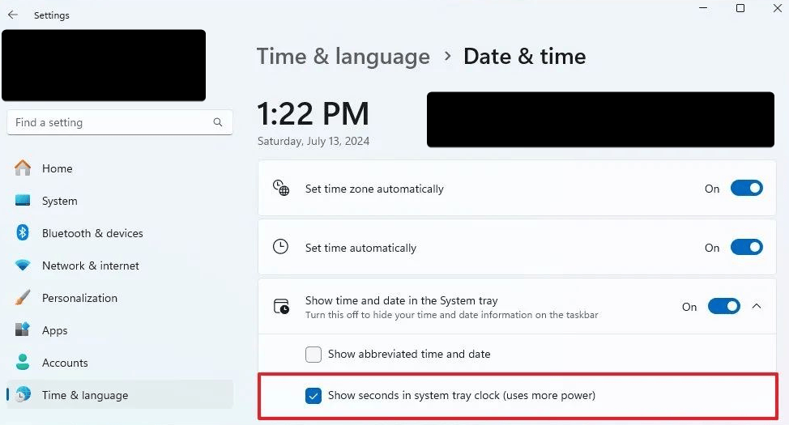
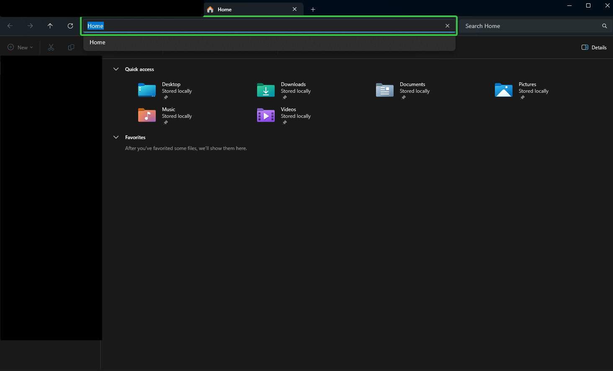

Windows – Průvodce a tipy
Instalace, nastavení, klávesové zkratky a řešení problémů ve Windows.
Instalace Windows bez Microsoft účtu
Na začátku instalace při výběru jazyka:
- Stiskni
Shift+F10pro otevření příkazového řádku. - Zadej:
start ms-cxh:localonly
Tip
Pokud příkaz nezafunguje, zkus místo toho:
OOBE\BYPASSNRO
Řešení neviditelného disku při instalaci
Postup načtení ovladače disku během instalace
- Otevři příkazový řádek:
Shift+F10 - Zjisti informace o discích:
wmic diskdrive list brief - Stáhni ovladač podle typu řadiče:
- Intel RST VMD / Managed Controller – pro RAID/NVMe/SATA
- Intel Optane Memory and Storage Management – pro Optane
- Ovladač stahuj z webu výrobce zařízení (Acer, Dell, HP…)
- Rozbal ovladač na USB disk.
- Na obrazovce výběru disků klikni na Načíst ovladač (Load Driver).
- Vlož USB a vyber soubor ovladače.
Note
Novější verzi ovladače poznáš podle vyššího hexadecimálního čísla v názvu souboru (09AB > 08AB).
Important
Po načtení ovladače by měl být disk viditelný a připravený pro instalaci.
Základní nastavení
Zobrazení sekund v dolním panelu

Klávesové zkratky
| Zkratka | Akce |
|---|---|
Win + D |
Minimalizace / obnovení všech oken |
Alt + D |
Přechod na adresní řádek v Průzkumníku |
Shift + F10 |
Náhrada chybějící kontextové klávesy |
Skočení na adresní řádek

Chybějící kontextová klávesa

Náhrada: Shift + F10